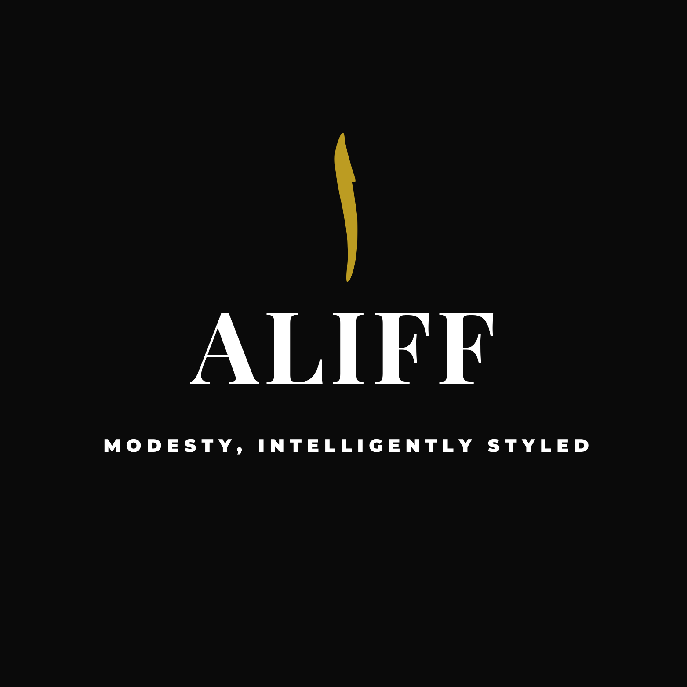

Recognized By

← Back to HomeFounder Story
Khansa Khatoon
ALIFF didn't start with technology. It started with a daily frustration.
Every morning, I stood in front of a full wardrobe and still felt like I had nothing to wear. Not because I lacked options, but because none of them felt right. As a Muslim woman, getting dressed is never just about style. It's about modesty, context, comfort, and identity, all at once.
And yet every solution I found ignored that reality.
Fashion apps pushed trends that didn't fit my values. Styling advice assumed a different lifestyle. Even AI tools treated modesty as an afterthought, something to adjust after the outfit was already built.
So I stopped looking for a solution and built one.
Recognized By
Aliff is the first letter of the Arabic alphabet. The beginning.
That's intentional.
Because this is a beginning for a tool that finally treats modesty as a first principle, not a constraint. One that turns your own wardrobe into thoughtful, wearable outfit plans without asking you to compromise who you are.
This is not about more clothes. It's about clarity. About removing decision fatigue. About helping women feel put together in a way that aligns with their values.
I'm a creative strategist and food photographer. I understand people, behavior, and the small decisions that shape how we show up every day. I'm not a traditional technologist, and that's exactly why I built this differently, starting from lived experience and building outward.
ALIFF is built in public, shaped by real women, grounded in one belief:
✦ You shouldn't have to choose between modesty and style.
✦ You shouldn't have to overthink getting dressed.
✦ You shouldn't feel unseen by the tools meant to help you.
This is just the beginning.